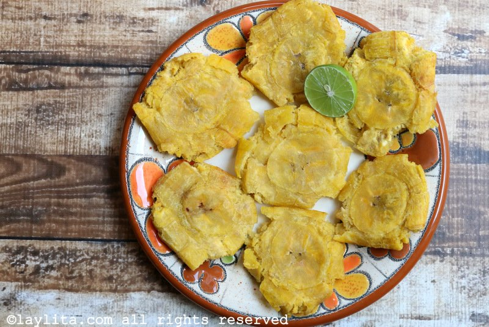

Patacones pa' morir

Delicia platanil
¿Alguna vez deseaste probar un pedazo del cielo aquí en
la tierra? Si la respuesta es "sí", entonces esta receta es
para ti.
Los patacones son una comida sencilla pero deliciosa
que sirve como acompañamiento para casi cualquier comida
que te puedas imaginar. Desde pollo, pescado, hasta los
más exquisitos mariscos. ¡Y más! Así que no esperes más y
prepárate pare una gran experiencia culinaria.
Ingredientes
- 2 plátanos verdes use 1 plátano
por persona si los va a servir como entrada o 1
plátano por cada dos personas si los va a servir
como acompañante. Cada plátano rinde unos 4 o 5
patacones
- Aceite para freír de aguacate,
girasol, etc. para freír a temperaturas altas
- Sal al gusto
- Opcional Ajo machacado ají
molido u otros condimentos
Salsas para acompañar a los patacones
- Ají criollo o salsa picante de cilantro
- Ají de tomate de árbol
- Salsa de chimichurri
- Mayonesa de cilantro
- Salsa rosada
Preparación
- Pele los plátanos: la manera más fácil de
pelar un plátano verde es hacerle un corte
longitudinal en uno de los ángulos, el corte
debe ser de la profundidad de la corteza,
sin tocar el interior del plátano. Luego
use el cuchillo para levantar la piel y
con los dedos quite la corteza. Mientras
más verdes estén los plátanos, más difícil
es pelarlos.
- Corte el plátano en rodajas gruesas,
puede hacer cortes rectos o cortes
diagonales.
- Caliente el aceite a fuego medio en una
sartén - use suficiente aceite para que
las rodajas de plátano este casi cubiertas -
o una freidora, la temperatura debe ser de
350 F. Fría los plátanos hasta que empiezan a
ponerse amarillos, pero no deje que se doren.
- Retire los plátanos y use una pataconera, o un
mortero o el fondo un vaso, para aplastarlos con
cuidado para que no se despedacen.
- Espolvoree las rodajas de plátano con sal u otros
condimentos - para darles sabor a ajo, frote el
ajo crudo en las rebanadas. Guarde los patacones
hasta que este listo para freírlos por segunda vez.
- Vuelva a calentar el aceite a fuego alto, la
temperatura debe ser de alrededor de 375 F, y fría
los rodajas de plátano aplastado hasta que estén doradas,
aproximadamente 1-2 minutos por cada lado.
- Retire los patacones del aceite, póngalos sobre toallas
de papel para absorber la grasa, y agregar más sal si
es necesario.